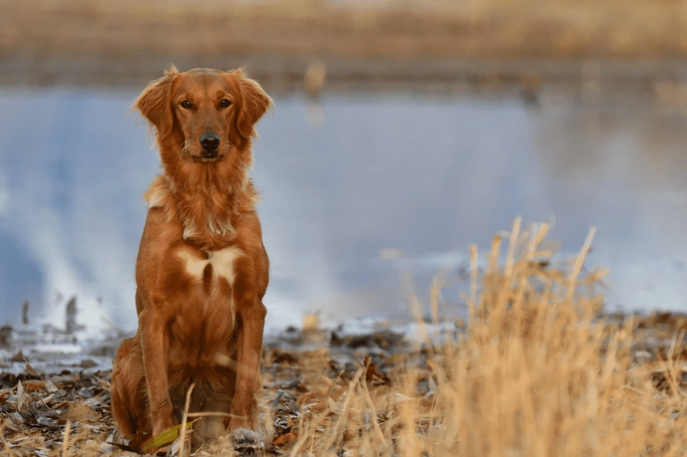
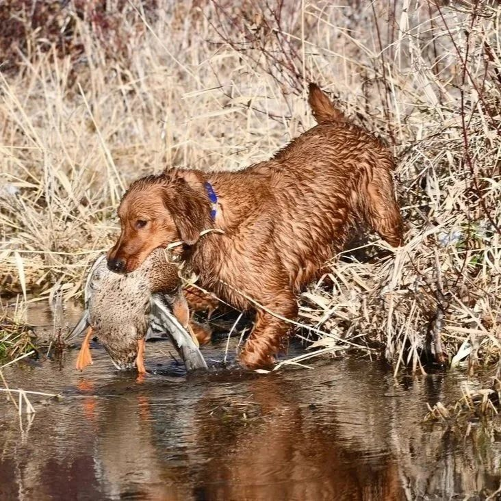
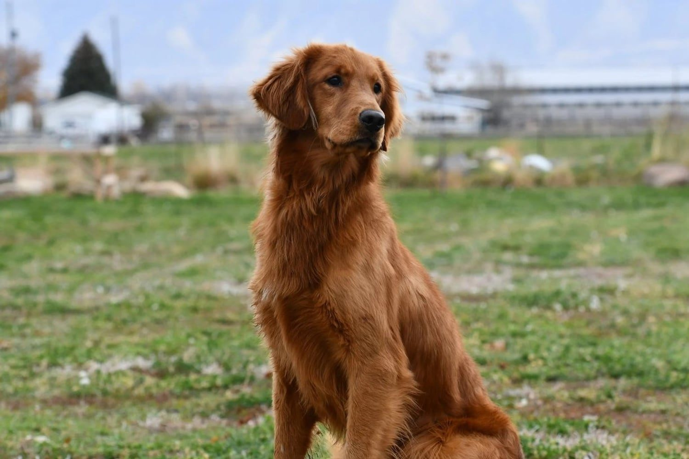
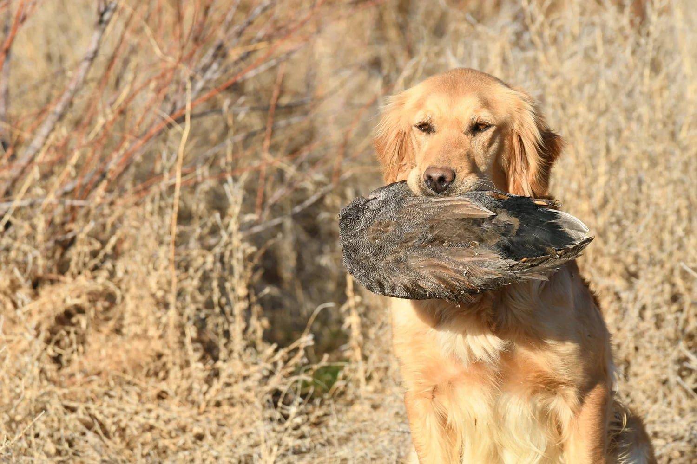

If your dog is scared of fireworks, the first thing I would do is stop adding more unnecessary loud-noise exposure.
Do not make more noise just to see whether the dog is still afraid.
Do not clap over the dog.
Do not bang things nearby.
And if this is a hunting dog, I would not take it out and fire a gun just to see whether the fireworks affected it.
If the dog has already had a bad experience with loud noise, more uncontrolled exposure can make the negative association stronger.
The first step is to slow down and watch the dog’s demeanor.
A dog does not have to run away to be scared
One of the biggest mistakes people make is assuming the dog is fine because it stays nearby.
A dog can sit right beside you during fireworks and still be afraid.
What I look for is whether the dog’s normal behavior changes.
The dog may:
- Become unusually still.
- Stay glued to the owner.
- Stop playing.
- Stop eating.
- Stop retrieving.
- Lose interest in birds.
- Become tense.
- Lower its energy.
- Try to move toward a quieter place.
- Stop acting like itself.
That change in demeanor matters.
Ask yourself: is the dog still acting normal?
Before the fireworks started, was the dog:
- Moving around normally?
- Playing?
- Eating?
- Retrieving?
- Relaxing?
- Interacting with the family?
Then the fireworks begin.
What changes?
If the dog becomes quiet, clingy, tense, or stops participating in normal activities, I would take that seriously.
The goal is not simply a dog that stays in the room.
The goal is a dog that can hear the noise and continue being itself.

Do not keep testing the dog
If the dog reacts badly to fireworks, do not create another loud noise to confirm the reaction.
That is the same mistake I see people make with gunfire.
They think:
“Let’s try it again and see if he’s really scared.”
But every bad repetition can reinforce the problem.
One negative reaction is enough information to slow down.
Give the dog a more controlled environment
If possible, reduce the intensity of the fireworks experience.
That may mean:
- Bringing the dog indoors.
- Moving farther away from windows or outside noise.
- Giving the dog access to a familiar resting area.
- Keeping normal routines in place.
- Letting the dog eat, play, or relax if it wants to.
The goal is to lower pressure rather than force the dog to face more noise.
Keep something positive going
When possible, I like the dog to be doing something positive.
That might be:
- Eating.
- Playing.
- Retrieving.
- Spending time with the family.
- Relaxing in a familiar place.
The idea is not to distract the dog at all costs.
It is to keep the overall environment as normal and positive as possible.

What if the dog will not eat or play?
That is useful information.
If a dog normally loves food, play, or retrieving and suddenly will not do those things during fireworks, the noise may be above the dog’s comfort level.
Do not increase the exposure.
Do not force the dog to participate.
Let the dog settle.
Then work at a lower level later.
- 1Stop extra noise
- 2Lower the pressure
- 3Watch demeanor
- 4Reintroduce sound only if the dog is ready

Fireworks can matter for hunting dogs
If the dog is a hunting dog, I would pay special attention to a bad fireworks reaction.
Fireworks and gunfire are not exactly the same sound.
But both can involve sudden, sharp noise.
If a dog develops a strong negative association with loud noise, that can make future gunfire introduction more difficult.
That is why I would not assume the dog will automatically be fine with a shotgun just because it has hunted before.
Do not use gunfire as the next test
After a bad fireworks night, hunters sometimes want to know whether the dog is still okay with guns.
I would not immediately take the dog out and shoot around it.
That creates another high-pressure test.
Instead, rebuild confidence first.
Then, if you return to live gunfire, do it gradually.
Start far away.
Pair the sound with something positive.
Watch the dog’s demeanor.
When recorded sound can help
For a dog that has developed concern around loud sounds, controlled sound work can be useful.
That is one reason I created Gunshy Fix.
The program combines calming music with progressively introduced gunfire recordings.
The dog can hear those sounds in a controlled environment while doing normal positive activities.
That might include:
- Eating.
- Playing.
- Retrieving.
- Relaxing.
- Spending time with the family.
The goal is to keep the dog below the point where its demeanor changes.
Start at a comfortable level
If you use Gunshy Fix after a bad loud-noise experience, start with the first lesson at an average, comfortable volume.
Then watch the dog.
If the dog acts completely normal, stay with that lesson until it is comfortable.
Then move forward.
If the dog’s behavior changes at the next level, go back.
Stay there until the dog is relaxed again.
Then try moving forward later.
Do not turn the volume up quickly
Recorded sound should not become another test.
If the dog looks comfortable, that does not mean you need to raise the volume aggressively.
The goal is gradual exposure.
The dog sets the pace.
What if the dog seems fine the next day?
That is encouraging.
But I would still be cautious about immediately exposing the dog to another loud situation.
A dog may return to normal quickly and still have had a negative experience.
There is no downside to being careful.
There can be a big downside to repeating the same bad exposure.
How do you know the dog is improving?
Look for normal behavior returning.
The dog should be able to:
- Eat.
- Play.
- Retrieve.
- Relax.
- Move around normally.
- Maintain normal energy.
- Stop focusing on the sound.
Those are better signs than simply seeing that the dog did not hide.
What if the dog is still nervous around loud noise?
If the dog continues to react negatively, do not keep increasing the intensity.
Back up.
Work at a lower level.
Give the dog more time.
Some dogs are more sensitive than others.
The process may take weeks or longer.
When should you get professional help?
Professional help may make sense if:
- The dog has severe reactions to fireworks.
- The dog remains shut down after the noise stops.
- The dog begins reacting negatively to gunfire.
- The dog stops hunting or retrieving.
- The dog repeatedly hits the same threshold.
- You are unsure how to read the dog’s demeanor.
- You do not have a safe setup for controlled live-gun work.
A professional trainer can help determine whether the dog is ready to return to field work.
If this is a puppy, be even more careful
Puppies can develop bad associations quickly.
I would not deliberately expose a puppy to loud fireworks or gunfire to see what happens.
If the puppy reacts negatively, slow down.
Return to positive activities.
Use lower-level sound later.
Do not keep testing.
The main thing to remember
If your dog is scared of fireworks:
Stop adding more loud-noise exposure.
Watch the dog’s demeanor.
Keep the environment controlled.
Return to positive activities.
And if you reintroduce sound later, do it gradually.
The goal is not to make the dog endure the noise.
The goal is to rebuild comfort around it.
Start with a controlled sound progression
Gunshy Fix was created as a controlled way to introduce or reintroduce loud gunfire sounds at home.
The lessons combine calming music with progressively introduced gunfire recordings so the dog can move forward according to its comfort level.